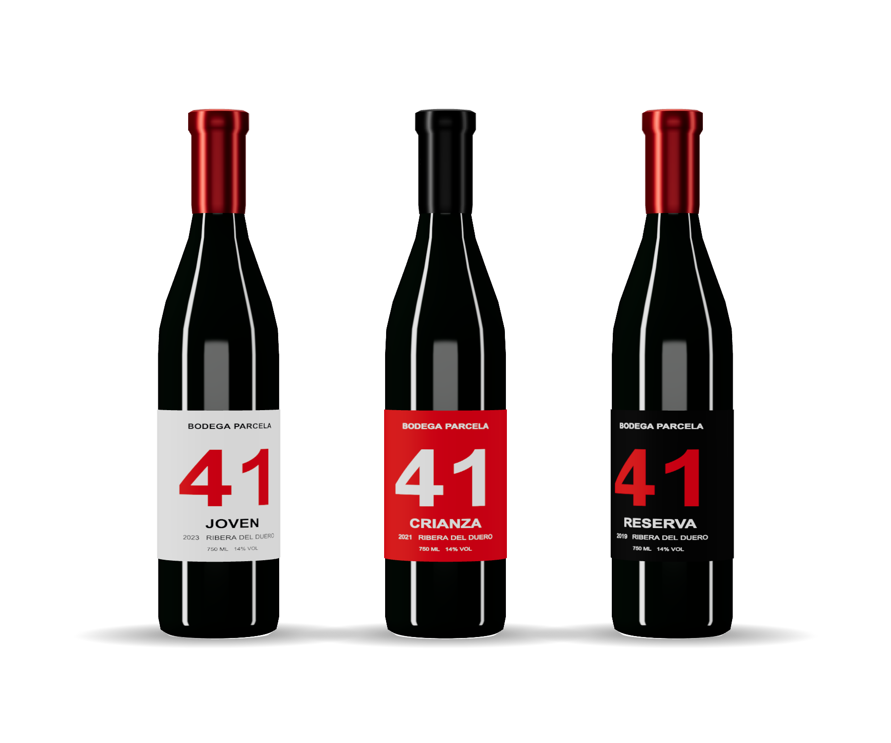
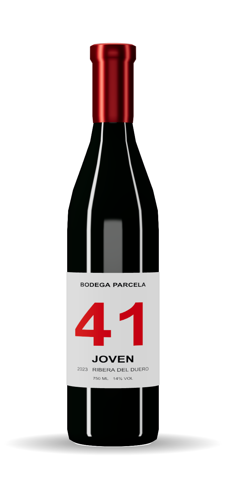
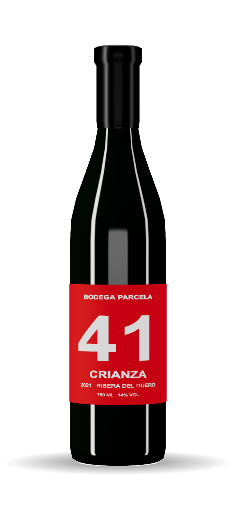
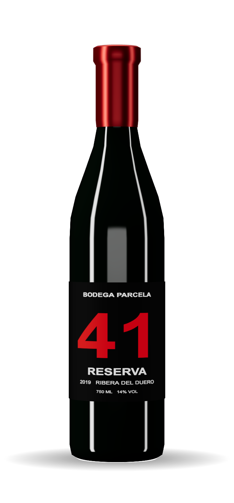

Parcela 41 is a family bodega in Ribera del Duero. We make 12,000 bottles a year from one vineyard.
Book a tastingIllustrative figures for this demo.
1987
That is the year Marta’s grandfather planted the first rows.
Every cluster is cut and sorted on a table, and we press it within four hours. The wine rests in oak until we taste it and decide it is ready.

2023JovenIt is fresh and full of red fruit, so drink it this year.14 €
2021CrianzaIt spends twelve months in oak and tastes of dark cherry and cocoa.24 €
2019ReservaIt spends twenty-four months in oak and keeps for ten years.42 €Illustrative prices and notes for this demo.
We hold tastings on Saturdays for up to eight people.
Book a tastingSat 11:00